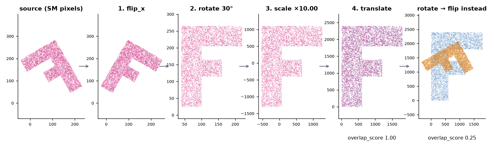
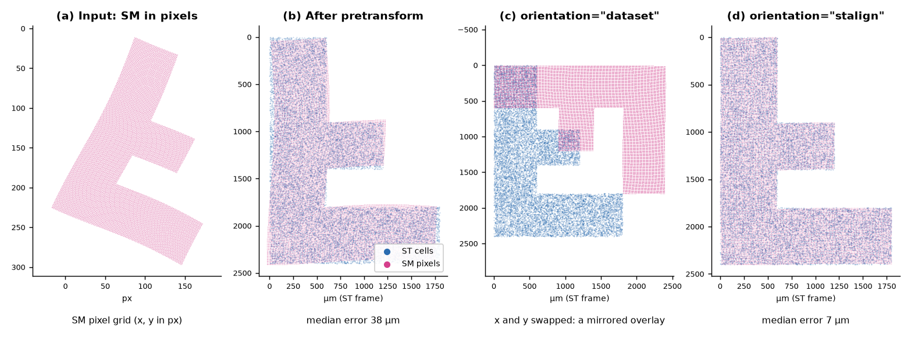

Coordinate frames¶
Most registration failures are not registration failures. They are two tables in different units, a flip applied in the wrong order, or x and y swapped on the way out of STalign. This page lists every frame your data passes through, the conversions between them, and which output column is in which frame, so you can check your inputs before you trust an overlay.
flowchart LR
subgraph IMG ["Image frame · pixels"]
SEG["Segmentation outputs<br/>x = column, y = row<br/>origin top-left"]
end
subgraph SMP ["SM frame · pixels"]
SMX["MALDI matrix<br/>x, y on its own grid"]
end
subgraph ST ["ST frame · µm (the reference)"]
XEN["Xenium cells<br/>x_centroid, y_centroid"]
OUT["Registered outputs<br/>x_transformed, y_transformed"]
end
SEG -- "× pixel size<br/>(you do this)" --> UM["Nuclei in µm"]
UM -- "centroid registration<br/>+ snapping" --> OUT
SMX -- "scale_xy (default × 10)<br/>then pre-registration" --> PRE["SM roughly in<br/>the ST frame"]
PRE -- "STalign LDDMM<br/>works in (row, col)" --> RC["(row, col) output"]
RC -- "orientation = stalign" --> OUT
RC -. "orientation = dataset<br/>(x and y swapped)" .-> BAD["Transposed:<br/>does not overlay ST"]
classDef ref fill:#2b6cb02e,stroke:#2b6cb0
classDef mov fill:#d53f8c2e,stroke:#d53f8c
classDef bad fill:#dd8a2e2e,stroke:#dd8a2e
class XEN,OUT ref
class SEG,UM,SMX,PRE,RC mov
class BAD badThe spatial transcriptomics (ST) frame, in microns, is the reference. Every other dataset moves into it, and nothing ever moves the ST data.
Microns and pixels¶
| Data | Units | Origin and axes |
|---|---|---|
| Xenium cells, transcripts | µm | Xenium's own frame |
| SMINT segmentation outputs | pixels of the full image | top-left; x is the column, y is the row |
MALDI / SM matrix x, y |
pixels of the SM grid | as exported by the instrument software |
| All registered outputs | µm, in the ST frame | as the ST data |
SMINT registration parameters are in microns: max_distance (100), the
multiround block sizes (500 and 250), snap_radius (10) and the LDDMM raster
pixel size dx (30). Give them pixel coordinates and every one of those
defaults is wrong by your pixel size.
Segmentation does not convert to microns for you. Multiply by the pixel size
from your image metadata (OME-TIFF PhysicalSizeX / PhysicalSizeY) before
registering:
import pandas as pd
import tifffile
with tifffile.TiffFile("slide.ome.tif") as tif: # the image you segmented
pixels = tifffile.xml2dict(tif.ome_metadata)["OME"]["Image"]["Pixels"]
pixel_size_um = float(pixels["PhysicalSizeX"]) # check PhysicalSizeXUnit if set
nuclei = pd.read_csv("seg_out/nuclei_summary.csv") # x_centroid, y_centroid in pixels
nuclei[["x_centroid", "y_centroid"]] *= pixel_size_um
nuclei.to_csv("nuclei_um.csv", index=False)
For an OME file holding several images, ["Image"] is a list; pick the one
you segmented.
If the post-stain image was not acquired in the Xenium frame, the nuclei are
now in microns but still offset; bring them within max_distance with
smint-alignment pretransform first (it fits scale from the extents and moves
the centroid onto the reference).
SM pixel scaling: scale_xy¶
read_sm_matrix (used by register_sm_to_st, prepare_landmark_inputs and
smint-alignment st-sm) applies three steps to the SM x, y, in this order:
- Scale by
scale_xy(default10.0,--scale-xy): MALDI pixels to microns for the data SMINT was developed on. Set it to your SM pixel pitch. - Rotate 90° anticlockwise if
rotate_left_90=True:(x, y) → (−y, x). - Shift so all coordinates are ≥ 0 (
keep_positive=True).
Scale once
If you already pre-registered the SM table (its coordinates are in µm in the
ST frame), register it with sm_kwargs={"scale_xy": 1.0, "keep_positive": False}
(--scale-xy 1 --no-keep-positive on the command line). Otherwise it is
scaled a second time, and pre-registered coordinates that fall below 0 are
shifted, which moves the table away from its landmarks. The same applies to
landmarks: they must be in the frame of the SM coordinates after
read_sm_matrix. Landmarks from prepare_landmark_inputs are, because it
rasterises with the same settings; landmarks picked on the CSV as stored
(for example in napari) are not, unless scale_xy is 1 and keep_positive
is False.
Pre-registration order¶
build_pretransform composes one 3 × 3 matrix from four operations, always in
this order, about the source centroid:
flip → rotate → scale → translate
The order matters because flips and rotations do not commute: "flip, then rotate 30°" is a different transform from "rotate 30°, then flip". Scale is fitted after the flip and rotation, because bounding-box extents change when you rotate.

build_pretransform(sm_xy, st_xy, rotation=30, flip_x=True); the
fitted scale is 10.00 and the overlap score reaches 1.00. Applying the same
rotation and flip in the other order leaves an overlap of 0.25. Plotted with
y up.from smint.alignment import build_pretransform, apply_pretransform, describe_pretransform, overlap_score
matrix = build_pretransform(sm_xy, st_xy, rotation=30, flip_x=True) # (N, 2) x, y arrays
moved = apply_pretransform(sm_xy, matrix)
print(overlap_score(moved, st_xy)) # 1.0 on the synthetic data above
print(describe_pretransform(matrix)) # scale_x 10.0, rotation_deg -150.0, reflects True, ...
describe_pretransform is the quickest sanity check: reflects: True means
the matrix contains a mirror, so a rotation of −150° here is "flip, then turn
30°", not a turn of −150°.
Which way is anticlockwise?
rotation is anticlockwise with the y axis pointing up. Images are usually
displayed with y pointing down, where the same rotation looks clockwise.
STalign works in (row, column)¶
STalign stores images as [Y, X] and points as (row, col) = (y, x).
SMINT converts at the edges so you can stay in (x, y):
- Landmark files hold
(x, y)per label (the format of STalign'spoint_annotator.pyand of the napari plugin);load_landmarksswaps them to(row, col)for STalign. - napari layers are also
(row, col); the plugin converts in both directions. - On the way out,
transform_points(and soregister_sm_to_standsmint-alignment st-sm) takes anorientation:
orientation |
x_transformed, y_transformed are |
Use it for |
|---|---|---|
"stalign" |
true x, y in the ST frame |
Anything new: overlays, joins, the R scripts |
"dataset" (default) |
x and y swapped relative to the ST frame |
Reproducing outputs of earlier pipeline runs |
The default is "dataset" so that older analyses keep producing the same
files. For new work, always pass orientation="stalign" (--orientation
stalign).

smint-alignment pretransform, five landmark pairs, then
register_sm_to_st once per orientation. (a) SM input in pixels.
(b) After pre-registration the median error is 38 µm. (c) With
orientation="dataset" the output is the transpose of the right
answer and does not overlay the ST cells. (d) With
orientation="stalign" the median error is 7 µm. Plotted with
y down, as an image.The orientation is not stored in the CSV
register_sm_to_st records it in df.attrs["orientation"], which lives
only in memory. Runs launched by smint-alignment or napari record it in
job_spec.json in the output directory. If you call the function yourself,
put the orientation in the output file name. A mirrored overlay along the
diagonal is the signature of a "dataset" output plotted against ST.
Which column is in which frame¶
| File | Columns | Frame |
|---|---|---|
cells_outlines.csv, nuclei_outlines.csv |
global_cell_id, x, y |
Image pixels |
cells_summary.csv, nuclei_summary.csv |
x_centroid, y_centroid, area |
Image pixels (area in px²) |
<base>_cells.csv, <base>_nuclei.csv (process_large_image) |
global_cell_id, chunk_id, x, y |
Image pixels |
cells.zarr, nuclei.zarr |
label masks | Image pixels; per-tile IDs, not the stitched IDs |
| Pretransform output CSV | the source's own coordinate columns, overwritten | Reference (ST) frame |
<output>.transform.json |
matrix, described |
Maps the original source onto the reference |
centroids_transformed.csv |
the source's original columns | Source frame, unchanged |
x_transformed, y_transformed |
ST frame (snapped where registration_status is snapped or assigned) |
|
x_transformed_smooth, y_transformed_smooth |
ST frame, transform only | |
target_index |
Row of the partner in the target table, −1 if none | |
sm_transformed.csv |
x, y |
SM frame after scale_xy, rotation and shift, not the original pixels |
x_transformed, y_transformed |
ST frame with orientation="stalign"; transposed with "dataset" |
|
Landmark .npy |
{label: [(x, y)]} |
The frame of the data you clicked on |
Check before you register
smint-alignment columns my_table.csv lists a table's columns and shows
which pair SMINT would pick. ST tables often carry several coordinate pairs
from different processing stages, and registering the wrong pair fails
silently. Pass the columns explicitly when in doubt.
Next steps¶
- See where each conversion happens in the pipeline: The SMINT workflow.
- File formats in full: Data formats.
- Pre-registration in napari: napari plugin.
- A complete sequential run: Sequential-section registration.
Figures are generated by docs/assets/concepts/src/make_registration_figures.py
and docs/assets/concepts/src/make_stalign_figure.py.